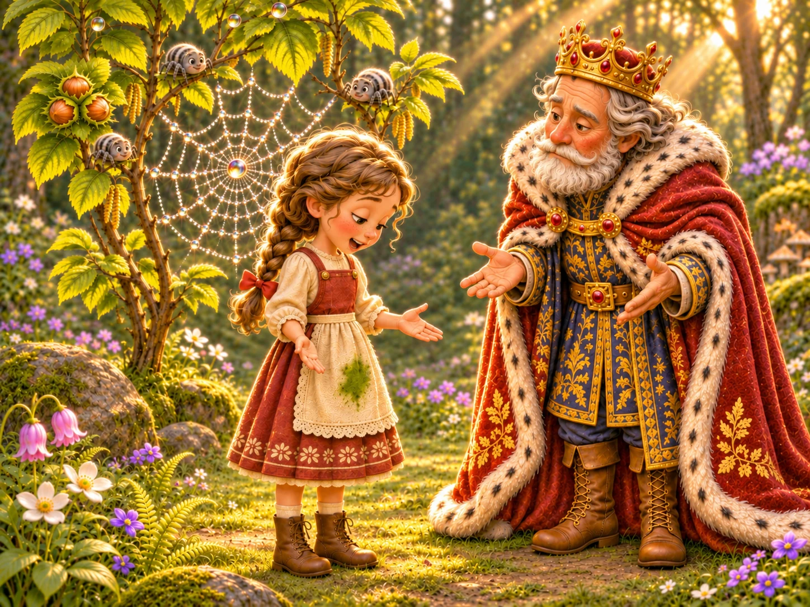

ElinSzene 9
Elin
Am Wegrand stand ein Mädchen. Es hieß Elin. Leise sagte sie: „Ihr habt es gesehen. Aber Ihr habt nicht hingeschaut.“
Der König blieb stehen, obwohl er Kinder nicht mochte.
Etwas an Elins Stimme machte ihn nachdenklich.

Welche Satzteile gehören zusammen?
Tippe zwei Karten an, die zusammenpassen.